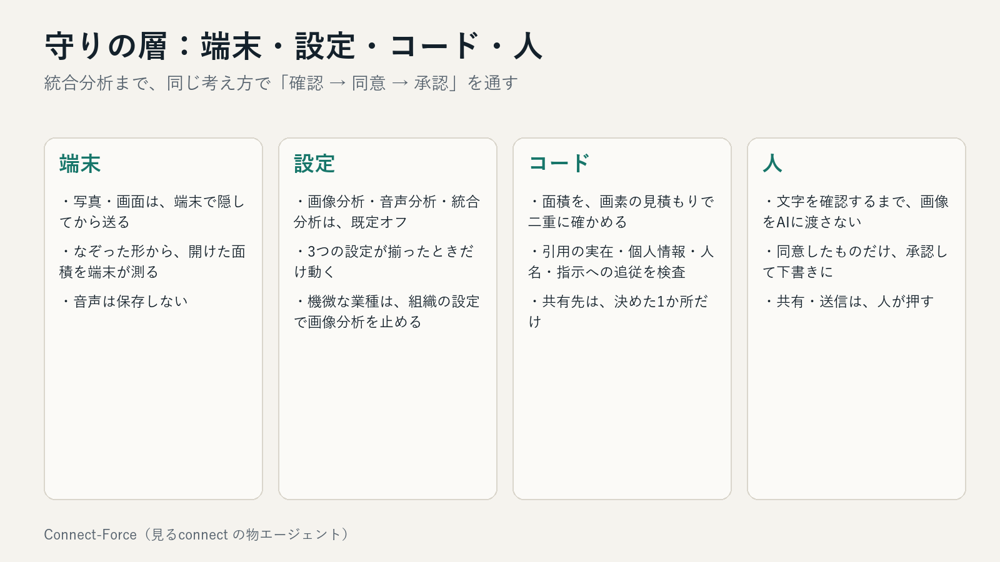
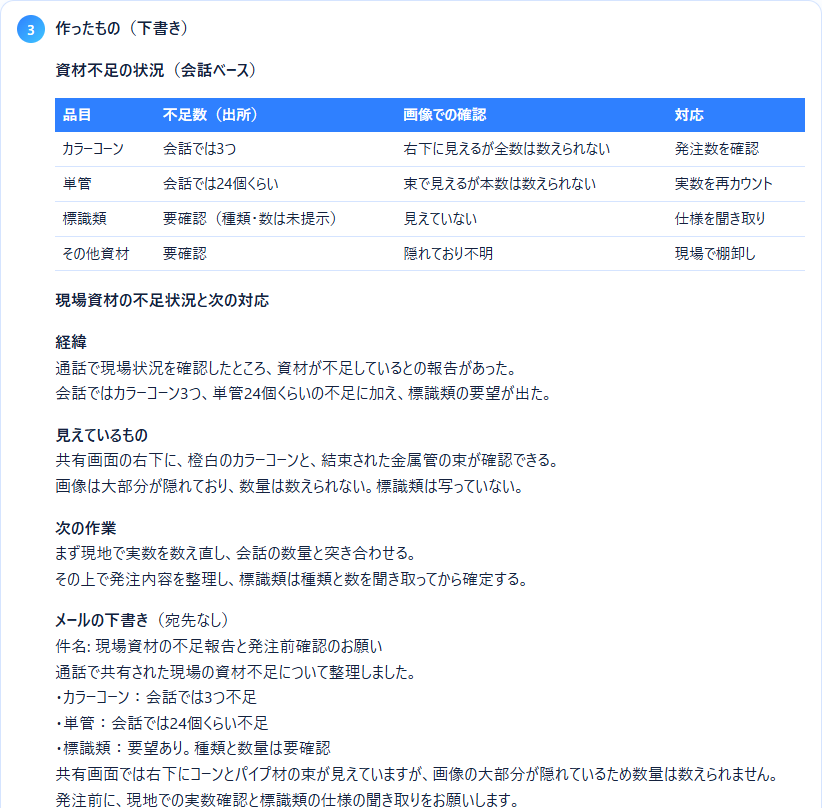
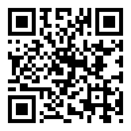

会話と画面から、次の業務を組み立てる「物エージェント」
物や場所に貼ったQR・NFCにかざすと、その物の担当・記録・これまでの経緯が開きます。作業の成果は、写真と声から「動くカード」にして、リンクで渡せます。その裏で、状況を見て動くのが物エージェントです。
AIが選び、コードが守り、人が確定する。 送信・共有範囲の拡大・削除は、AIにはできません。
タグを読むと、その物のページが開く。経緯と今の状態を、根拠のカードつきで要約。
顔・ナンバー・書類は、端末で隠してから送る。通話画面は「開けた所だけ」をAIが見る。
会話を確認して同意すれば、資料・メールの下書きまで。送るのは、人。


統合分析の完了（デモ音声と現場画像）
統合分析 1 回の費用（Claude の最上位を 1 回）
自動テスト。門を外すと失敗する変異 35 か所
ClaudeOrca RouterGemini（音声）PythonWebアプリ（スマホ・PC）
Excel・Word の生成は標準ライブラリだけ。追加の依存を増やしていません。

コードと資料は GitHub で公開しています
https://github.com/009-next/app_dev
審査員の方も、リポジトリの README の手順で、そのまま動かせます。